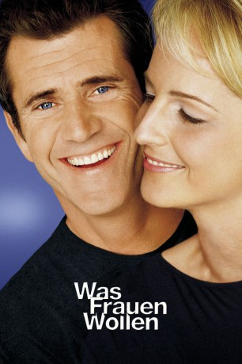

#4001 Was Frauen wollen
Alternativ: What Women Want
 
 IMDB-Wertung: 6.4 / 10
IMDB-Wertung: 6.4 / 10  Metascore: 0
Metascore: 0 
Der erfolgreiche Werbefachmann Nick Marshall kann es kaum fassen: statt wie erwartet in die Chefetage befördert zu werden, erhält die junge Darcy Maguire den Posten – eine Frau wird seine Vorgesetzte! Zu allem Übel muss er auch noch eine Kampagne für Lockenwickler, Nagellack und andere Schönheitsutensilien entwickeln, die über das Vorstellungsvermögen des überzeugten Machos hinausgehen. Aus Mangel an Ideen startet er einen Selbstversuch mit Haarwachs und Strumpfhosen, der in einem Folgenschweren Unfall endet: Auf einmal kann er hören, was Frauen denken und sein Leben als Mann bekommt eine ganz neue Perspektive.
Jahr: 2000
Dauer: 121 Minuten
FSK: 6
Land: USA Studio: Paramount PicturesTonspuren: DD5.1 - ,
Untertitel:
Auflösung: 1080p (1920x1080) Größe: 8335 MB
Genre: Komödie, Fantasy, Liebe
Regisseur:  Nancy Meyers
Nancy Meyers
Drehbuch: Sidney Lumet
Soundtrack:
Darsteller:
 Mel Gibson als Nick Marshall
Mel Gibson als Nick Marshall Helen Hunt als Darcy Maguire
Helen Hunt als Darcy Maguire Marisa Tomei als Lola
Marisa Tomei als Lola Alan Alda als Dan Wanamaker
Alan Alda als Dan Wanamaker Ashley Johnson als Alex Marshall
Ashley Johnson als Alex Marshall Mark Feuerstein als Morgan Farwell
Mark Feuerstein als Morgan Farwell Lauren Holly als Gigi
Lauren Holly als Gigi- Delta Burke als Eve
 Valerie Perrine als Margo
Valerie Perrine als Margo Judy Greer als Erin the File Girl
Judy Greer als Erin the File Girl Sarah Paulson als Annie
Sarah Paulson als Annie Ana Gasteyer als Sue Cranston
Ana Gasteyer als Sue Cranston Lisa Edelstein als Dina
Lisa Edelstein als Dina Loretta Devine als Flo the Doorwoman
Loretta Devine als Flo the Doorwoman Diana Maria Riva als Stella
Diana Maria Riva als Stella Eric Balfour als Cameron
Eric Balfour als Cameron Andrea Baker als Office Intern
Andrea Baker als Office Intern- Brian Callaway als Man on Street
- Coburn Goss als Man on Street
 Logan Lerman als Young Nick Marshall
Logan Lerman als Young Nick Marshall- Palmer Davis als Showgirl
- Gregory Cupoli als Male Role Model
- Alexondra Lee als Woman in Pink Sweater
 Shirley Prestia als Coffee Shop Customer
Shirley Prestia als Coffee Shop Customer T.J. Thyne als Coffee Shop Customer
T.J. Thyne als Coffee Shop Customer Audrey Wasilewski als Secretary with Danish / Kitchen Secretary
Audrey Wasilewski als Secretary with Danish / Kitchen Secretary Angela Oh als Jess, Dan's Secretary
Angela Oh als Jess, Dan's Secretary- Robert Briscoe Evans als Ted
 Katie Kneeland als Woman in Park
Katie Kneeland als Woman in Park- Kelley Hazen als Woman in Park
- Brooke Elliott als Woman in Park
 Lisa Long als Sloane / Curtis Executive
Lisa Long als Sloane / Curtis Executive- Ashley Quirico als Marshall Field's Shopper
- Regan Rohde als Marshall Field's Shopper
- Cristine Rose als Sloane / Curtis Attorney
 Arden Myrin als Darcy's Assistant
Arden Myrin als Darcy's Assistant- Alex McKenna als Alex's Friend
- Lisa Anne Hillman als Woman in Library
- Ashlee Turner als Woman in Library
- Maggie Egan als Kitchen Secretary
- Juanita Jennings als Kitchen Secretary
- Robin Pearson Rose als Kitchen Secretary
- Caryn Greenhut als Woman at Lunch Counter
- Gil Hacohen als Haim
- Christopher Emerson als Mail Room Kid
- Victoria Garcia-Kelleher als Secretary
- Kira Coplin als Alex's Friend , uncredited
 Kiva Dawson als Showgirl , uncredited
Kiva Dawson als Showgirl , uncredited David C. Fisher als Restaurant Patron , uncredited
David C. Fisher als Restaurant Patron , uncredited- Elizabeth Friedman als Classmate , uncredited
Datei: X:\2-Dilogie(N-Z)\Was Frauen wollen\Was Frauen wollen (2000, FSK6, 1920x1080).mkv seit 11.07.2016
Festplatte: HD Collection-2(A-Z)-3(A-M)
 Alle Filme aus Gruppe '2-Dilogie(N-Z)\Was Frauen wollen'
Alle Filme aus Gruppe '2-Dilogie(N-Z)\Was Frauen wollen'